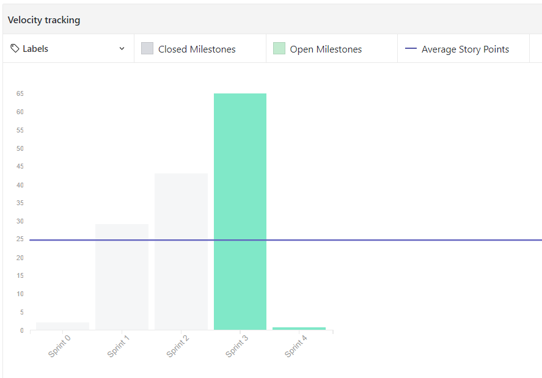

Sprint 3
Duração
Data início: 01/04/2018Data término: 07/03/2018
Duração: 7 dias
Objetivos
- Aumentar o conhecimento da equipe sobre o projeto;- Diminuir o risco de baixa produção da equipe;
- Aumentar a interação dos membros.
Sprint Backlog
#30 Criar RoadmapRefatorar fishbone #134
Reunião com Designer do Lappis #131
Reunião com o cliente #132
Refatorar documento de arquitetura #130
Refatorar documento de visão #129
Criar documentação para API #126
Treinamento de Arquitetura Microservice #124
Aplicar o GitHub Pages #123
Planejar reunião #122
Refatorar modelagem da Arquitetura #121
Refatorar travis #120
Organizar pasta docs #118
Atualizar planilha EVM #117
Criar Style Guide do projeto #111
Reunião com Colaboradores externos #95
Automatizar teste coverage #81
Visualizar usuário gestor #69
Criar usuário gestor #60
Criar product backlog #135
Refatorar Roadmap #133
Visualizar médicos #125
Visualizar perfil #119
Documentar sprint 3 #116
Implementar uma solução de API Gateway #115
Criar sessão de login #114
Criar sessão de login #9
Criar Docker React-Native #87
Mapa de Requisitos #93
Papéis
- Product Owner: João Egewarth
- Scrum Master: Isaque Alves
- DevOps: Eliseu Egewarth
- Arquitetura: Gabriela Alves
- Desenvolvedores: Beatriz Hanae, Ezequiel De Oliveira, Felipe Campos, Gabriela Guedes, Guilherme Deusdará, Vitor Leal.
Pareamento

Burndown
Planejados:- 29 issues
- 64 Pontos
Executados:
- 32 Issues
- 43 pontos
O burndowm da sprint pode ser encontrado aqui.
Revisão
Duração: 1 hora.Na revisão foram apresentados todos os artefatos produzidos durante a sprint.
Também foi definido que o grupo ia flexibilizar os testes para essa sprint, devido a curva de aprendizado.
Dívidas Técnicas
Criar Docker React-Native #87Retrospectiva
Duração: 45 minutos.Pontos positivos
- Acanco na tecnologia- Visibi- lidade melhor do codigo
- Aplicação dos coach
- Aprendeu api sem Treinamentos
- Colaboradores externos
- Esclarecimento com o cliente
- Comunicação entre os times
Pontos Negativos
- Comecou tarde- Dificuldade com testes
- Baixa cobertura
- Mal planejamento da arquitetura
- Falta de dedicação
- Dificuldade com a API nova
- Falta de planejamento (das atividades)
- Comunicação entre os times
Quadro de conhecimento

Velocity
Frequência de commits

Riscos
Houve riscos pontuais que não necessitam ser mapeados no burndowm dos riscos, são eles:- Não temos produto para entregar na R1.
Os calculos e os gráficos de burndown dos riscos podem ser encontrados aqui!
Feedback
Para reduzir os riscos de interação dos times e para melhorar o quadro de conhecimento, foi definido coachs de EPS para manter uma comunicação e passar o conhecimento maior entre o time de MDS.Houve alteração positiva no quadro de conhecimento, pois os coachs conseguiram passar o conhecimento e integrar mais com a equipe, uma vez que somente o scrum master estava executando esse papel.
Tendo em vista os problemas das reuniões passadas, onde o time perdia o foco e extrapolava o tempo máximo dos ritos definidos. Para isso houve um planejamento da equipe de gerência para entender o a causa da desorganização da reunião. Com essa ação o time já teve melhorias na reunião de finalização da sprint 3 e do planejamento da 4, onde conseguiu reduzir o tamanho dos ritos e a duração de todos os ritos. Outra decisão tomada para a proxima sprint foi testar uma forma melhor de aproveitar as horas documentadas. A pontuação do time é baseada em horas onde cada ponto representa o seu dobro em horas, ex: 1 pto = 2 horas de trabalho, acreditamos que isso pode ajudar a tornar mais efetiva a pontuação do time.
O time continuou buscando resolver suas duvidas em comunidades e com colaboradores tecnicos na FGA.
O time continua com dificuldade em dividir as tarefas corretamente para trabalhar durante a sprint, mas como visto na frequencia de commits nada foi deixado para ultima hora como vinha acontecendo nas ultimas sprints.
Nessa sprint foi definido pareamento entre os integrantes de EPS, para melhorar o conhecimento e dividir as tarefas.